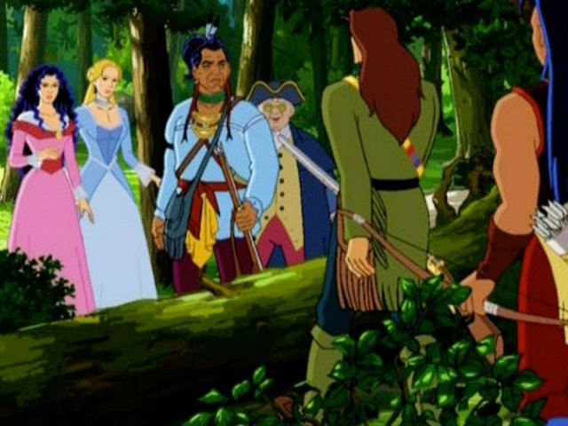

A new traveller. A hidden cave.
A difficult decision.

Совместный урок A2–B1, 10–11 лет; около 30 минут после просмотра серии (просмотр не входит в это время): 3 + 7 + 5 + 5 + 5 + 5 = 30 минут. Можно продлить обсуждение. В миссии 5 нужно открыть четыре вопроса и выбрать реплику, затем обсудить её; любая реплика допустима для обсуждения. В миссии 6 три галочки подтверждают совместную проверку, в том числе записи в тетради. Игра не оценивает качество письма автоматически. Изменение проверенной работы требует повторной проверки. Этапы доступны свободно. Устные и письменные ответы оценивает преподаватель; игра проверяет пары, порядок и грамматическую сборку. Можно исправлять ошибки без штрафов. Прогресс сохраняется только в браузере, если он разрешает localStorage.
Сюжет проверен по описанию эпизода TheTVDB. Само видео не проверено; текст адаптирован, не является транскриптом. В мультсериале Гамут — энтомолог, не учитель пения из романа. Дальнейшие серии не раскрываются. Этап 5 — придуманная ситуация, а не проверка точных реплик. Решение героев у водопада обсуждается только как событие мультфильма.
Порядок истории: встретили Гамута → он присоединился → укрылись → кончились боеприпасы → обсудили побег → Гамут и девушки остались ждать помощи. Ключ грамматики: joined / hid / ran out of / stayed. Письмо: 5–6 предложений; не требуйте идеальной грамматики с первой попытки. Домашка: нарисовать насекомое и написать 3 предложения с can/can’t.
Unofficial educational activity. Series artwork © Mondo TV / Rai Fiction. Image and story sources.